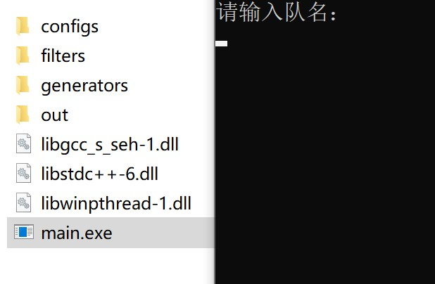
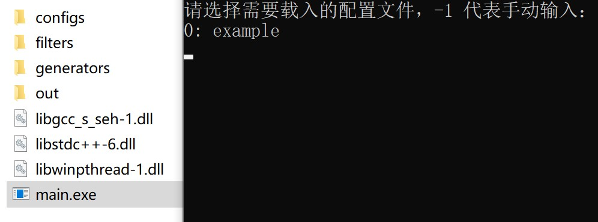

Chapter 2 测号技术
要在对战中取胜，关键是要找到一个足够强大的名字。筛选强号的过程被称为“测号”。
2.1 衡量名字/战组的强弱
-
前面已经介绍过官方给出的四种评分。由于你在实战中遭遇的名字通常会较强，所以通常来说强评对名字的组队实力更有参考价值，强单对名字的单挑实力更有参考价值。
-
建议把评分测试至 100%，10% 测出来的评分误差较大，并且在大多数时候会比 100% 偏高。如果觉得测试一个 100% 所需时间过久，后面有相关工具的介绍。
-
由于天卫和玩家的队员差别很大，强单高不一定说明进行玩家之间战斗时的实战强，一些特定技能的号（比如净化）会出现强单虚高的情况。对实战来说更有用的还是打其他玩家的强号的胜率。
-
通常来说，一个名字对另一个名字 60% 的胜率即可视为较高的胜率。但是打单个强号的胜率高并不能说明号的强度，因为各类型的号之间存在克制关系，比如强幻术也可能打不过弱护盾背刺。下面的三个名字之间的胜率就由于互相克制而形成了“石头剪刀布”的关系：
光YLqYQFwdtfCUl6J@Squall
U>7D3Ol7uWKIfTC@XJ联队
江DuDSKcYnD3nB@Squall
- 多人组也是同样的道理，评分高并不意味着打其他队的多人组就更强。我们提供了超强单、超强评的脚本方便玩家测试一些对主流玩家的单挑号/多人组的胜率分布和平均胜率（详见 2.4 节）。这是目前衡量一个号的单挑能力或一个多人组的实战能力的主要方式！
2.2 测号技术发展史
手测时代
基于原理：八围高于 652 的号在小于等于 10 人的战斗中，会在属性末尾显示一个表情。
由于比较强的号通常八围较高，我们可以每次枚举十个名字，查看有没有表情，取有表情的号测评分，评分高的保留。
每次输入十个号的格式可以由自己人为决定。通常会使用上十个号和这十个号改动所需要的操作较少且较为固定的格式，以提升速度。用快捷键 Alt+1 和 Alt+2 也能提升速度。
由于当时分身技能的数值设定有些不合理，导致存在一些八围不高（可能没有表情）但是分身概率/频率高，因此评分高实力强的号。在这类号被发掘出来后，手测可以加上一个步骤，在输入完名字开始战斗后按快进键，假如发现一个名字在战斗中分身了很多，那么也可以去测试评分。最著名的号应当为 sinα=-0.056@SG，当时普评为 7724，而第二名的评分不到 7300。很多这样测出来的强号都可以单挑一些被分身克制的 boss（比如蚊、尤里、史莱姆等）。
在作者调整平衡性将分身削弱后不再有快进测号的步骤。
速度：约几千到一万多每小时。
按键精灵时代
基于原理：将手测的过程使用按键精灵模拟。
手测找有表情的号的过程比较固定，因此用第三方软件【按键精灵】模拟这一动作，解放双手实现自动化，并且可以长时间连续生产。
相比于朴素手测，其劣势在于找分身号的过程比较难以量化，因此不太能用于寻找分身号。但是在作者调整平衡性将分身削弱后这个劣势不再存在。
速度：几万到二十几万每天。
官测时代
基于原理：游戏内置 !test! 寻找有表情号的功能。
按键精灵时代后期，玩家【滑稽】的速度已经达到了二十万每天以上，和其他人拉开了较大差距。在这种背景下，作者更新了 !test! 能帮你寻找有表情的号的功能，简称为官方测号器或官测。
官测速度并不算很快（作者确实表明故意压过速度）。但相比于按键精灵，可以开多个浏览器窗口同时测号（也称为“多开”），速度可以有所提升。
但是仍然不能连续挂机（一轮筛选结束后需要手动开始新一轮测试），这是相比于完整成熟按键精灵工具链的劣势。
速度：几十万每天。
文哥测号器时代
基于原理：js 脚本调用官测。
由玩家【文哥】发明，故称为文哥测号器或文测。原理是结合官测，使用 javascript 脚本，当一组号测完后将捕捉到的表情输出在 console 里，然后进行下一组测号。
实现了抓取有表情号的自动化，但评分仍然需要手动操作。
后来【文哥】对脚本进行改进，使用了合适的 UI，使得测号操作更加亲民化和方便化，并增加了将抓取到的号测 10% 评分并且高于一定阈值才输出来的功能。
省去了初步开箱的麻烦，但某种意义上也是失去了初步开箱的乐趣。
速度：几百万到近千万每天。
量子波动时代
基于原理：js 高速模拟手测。
由玩家【贩钻石剑】发明，【文哥】、【Hell】等人完善。
这个技术被称为量子波动的原因已难以考证，合理猜测是这个技术使用的时候屏幕会一直在闪，很像量子力学中的叠加态和不确定性。
不再基于官测，而是将手测的过程换成用 javascript 脚本实现，比按键精灵和官测快很多。同时也能测 10% 评分并输出高于一定阈值的号。
后期通过一些方式节省了部分渲染的时间（将捕获表情的方式改为接受输出表情的信号而不是寻找表情的图片），让速度变得更快。该技术被称为量子波动-β。
速度：几千万每天。
过渡阶段
基于原理：名竞源代码的部分反混淆破译。
如何将量子波动技术变得更快？在部分破译名竞源代码的基础上，可以将代码进行适当改动来提升速度。一些可能的方法包括将输入小于等于 10 个号才会显示表情改成小于等于 8000，或者大幅削减名竞的渲染等。
该阶段的测号器均为内部测试时使用，并没有流出。
速度：几千万到几十亿每天。
核测号器时代
基于原理：号的属性计算方式被找到。
玩家【powerless】对名字竞技场代码进行了部分反混淆，并找到了计算号的属性部分的代码。由于原本算号是用网页代码写的，速度较慢。改用 c++ 之类的速度较快的语言重写，且彻底抛弃了渲染等其他的框架后，速度大幅提升。
值得一提的是，玩家【文哥】、【滑稽】等人在先前就已经研制了类似的技术，只不过因为代码实现原因常数较大速度略慢，没有公开。
后来玩家【powerless】、【曙光】等人对原始代码进行进一步卡常加速优化，形成的测号器被称为【早期 pbb 测号器】。
之后算号核心代码被公布，玩家可以根据自己的需求自己编写测号器。比较出名的是【pl 测号器】（由【powerless】发明）和【pbb 测号器】（主要由玩家【曙光】依据【早期 pbb 测号器】发明，【昀澤】等人进行改写）。
由于新技术测号极快，因此被玩家们称为“核测号器”，意为“测号核武器”。
速度：几千亿到几万亿每天。
注意：现有的测号器速度已经接近理论上限，能覆盖绝大多数使用场景，请不要在没有极特殊需求的情况下自制测号器！！！
提醒：名竞的核心玩法是用号对战而不是写代码，编写名竞工具需要足够的游戏理解与实际经验，新人请先熟悉玩法，过度技术党不可取。
GPU 测号
基于原理：在显卡上运行特化的核测号器代码。
把核测号器的代码进行改写并在显卡上运行，可以获得极为恐怖的测号速度（理论上一天可以测几百到几千万亿）。
但显卡测号需要昂贵的高端 GPU 矿机集群和大量电能，并且很容易烧坏显卡，风险巨大。
经过玩家投票一致通过，该技术已被封存禁用。
严禁一切使用或变相使用 GPU 进行测号的行为！！！
重复一遍，这不是开玩笑，严禁一切使用或变相使用 GPU 进行测号的行为！！！
2.3 pl 测号器使用方法
目前 pl 测号器的封装程度较高，只需要玩家动手设置较少参数即可。
测号器文件可于官方源处下载, 或者在名竞 QQ 群内下载（群号在下一章）。本教程也提供了一个测号器的镜像。
pl 测号的格式为 前缀（可选）+ 变化字符 + 后缀（可选）+ @ + 队名。
使用前提醒：请关闭电脑的所有杀毒系统，或将 main.exe 加入它们的白名单。
首次测号
打开 main.exe 后，会见到如下场景。

此时应输入你自己的战队名。
接下来会出现两种测号模式。
随机模式（输入 0 选中）
第 1 步：输入你想要测的测号量（可以参考下一章”测号单位制“）；
第 2 步：输入前缀；
- 输入
+即为无前缀。 - 注意测号器并不会自动在前缀后加上空格，如果需要请自己输入。
第 3 步：输入后缀；
- 输入
+即为无后缀。 - 注意测号器也并不会在后缀前自动加上空格，如果需要请自己输入。
第 4 步：输入可变部分长度；
第 5 步：输入字符集；
- 注意不要在字符集中加入
+和@。 - 尽量不要输入
?，因为这有可能使你的名字出现???触发官测从而导致无法评分。 - 请确保
[字符集长度] 的 [可变长度] 次方远大于你的测号量（至少大几个数量级），避免出现随机重复的情况。
第 6 步：输入八围阈值；
- 低于该阈值的号将被忽略，理论上设置得越高运行速度越快，但会显著增加漏掉低八围强号的概率，推荐阈值为 632 ~ 652。
第 7 步：选择虚评作为筛号规则（虚评的详细介绍将在下一节给出）；
第 8 步：输入虚评阈值（推荐阈值为 4700 ~ 5000）；
- 注意 pl 内置的虚评是旧版，对号的评分较不准确，建议设置较低的阈值，用新虚评重新筛选时再提高。具体方法会在下一节给出。
第 9 步：输入 -2，结束配置；
第 10 步：如要保存，输入配置文件名；如不保存，输入 . 直接开始测号。
- 配置文件将保存在 configs 文件夹中。
- 如果保存了配置文件，后续使用时可以直接选择，也可以输入
-1进行手动配置。

测号输出将保存在 out 文件夹中。
请使电脑一直处于开机状态，否则窗口将会被关闭。
挂机测号时间视电脑情况决定，晚上一直开着测号器“夜挂”，有可能会缩短电脑寿命或发生危险，请自己权衡。
顺序模式（输入 1 选中）
第 1 步：输入测号区间；
- 注意区间为左闭右开。
e.g.
假设号量共为 100000000000。
则单开测号器中区间应填 0 100000000000；
双开测号器中区间应分别填 0 50000000000 与 50000000000 100000000000。
以此类推。
注意到电脑如分大小核，大小核之间测号速度会有较大差异，可根据实际情况填写区间。
第 2 步：输入前缀；
第 3 步：输入后缀；
第 4 步：输入可变部分长度；
第 5 步：输入字符集；
第 6 步：输入八围阈值；
第 7 步：选择虚评作为筛号规则；
第 8 步：输入虚评阈值；
第 9 步：输入 -2，结束配置；
第 10 步：如要保存，输入配置文件名；如不保存，输入 . 直接开始测号。
2.4 开箱器与超评分脚本
将待测号进行分数测评的行为，由于很像游戏中的开宝箱，需要运气，并且在出强号时有惊喜的感觉，因此称为“开箱”。
开箱技术
最初的开箱技术为手开，将出现的有表情的号一个一个复制到名竞网站中进行 !test! 测试。
后来通过 javascript 脚本，实现了自动化，可以进行挂机开箱，并且可以打开多个浏览器窗口同时开箱。
在开箱实践中逐渐发现，名竞官网会故意限制评分的速度，CPU 计算资源无法充分利用。通过部分修改名竞网页的源代码，可以解除游戏内置的评分限速，还能自定义评分的精度（如 1%）。
下面是一些使用加速技术的网站，测评分方法和 https://deepmess.com/namerena/ 相同（使用 !test!）。
大部分网站只能测特定精度的分数：
- 1%：https://tinman00.github.io/1/namerena/
- 2%：https://namerena.pages.dev/faster
- 5%：https://namerena.pages.dev/fast0
- 10%：https://tinman00.github.io/10/namerena/ 或 https://namerena.pages.dev/fast1
- 25%：https://namerena.pages.dev/fastqt
- 100%：https://tinman00.github.io/100/namerena/ 或 https://namerena.pages.dev/fast2
也有和官方网站相同，可以一直往下测的网站，例如 https://fast-namerena.pages.dev/。注意：这个网站处于动态开发中，极不稳定，已经多次爆出评分错误问题，不建议日常使用。
javascript 开箱脚本需要在这些网站上手动使用。
下面是一份脚本，开头的几个参数可以根据注释自行修改。
使用方法：将号复制进名竞的输入框（每行一个），按下 F12 键（这是电脑上的一个键，不是三个键！），在弹出的开发者工具页面中选择“控制台”或 "Console" 卡片，将脚本复制进去，按回车键。
注意相应精度需要对应的网站，否则可能会出现测得很慢浪费大量时间或者直接卡死的情况。
点击展开代码
let type= 2; //普评1 强评2 强单3 普单4
let acc= 10; //测百分之几的评分，官方网页只能测 10 或 100
let chktime= 50; //每隔多少毫秒检查一次，建议测 10% 设 50，100% 设 300
let outputmin= 0; //输出的最低阈值
let totnum= 1; //你想测几人组（测单人评分就是 1）
let suffix= ""; //多人组配队后缀，可以固定几个人，枚举一个人
const all=document.querySelector('#textdiv>textarea').value.split('\n');let j=0;let fi=0;let result="";let cur="";let avg=0;let cnt=0;function check(){if(fi){return;}
if(cw().document.querySelectorAll('span.u').length<=acc){setTimeout(()=>{check();},chktime);return;}
const progress=cw().document.querySelectorAll('span.u');let pos=-1;for(let i=acc;i<progress.length;i++){const element=progress[i];if(element.textContent.split(' ')[0]==='》'){pos=i;break;}}
if(pos==-1){setTimeout(()=>{check();},chktime);return;}
const val=progress[pos].textContent.split(' ')[2];if(cur!=cw().document.querySelectorAll('div.name')[totnum].textContent+cw().document.querySelectorAll('div.name')[totnum+1].textContent)
{let score=parseInt(val);if(score>=outputmin)result+=(`${all[j]} ${val}`)+"\n";cnt+=1;j++;cur=cw().document.querySelectorAll('div.name')[totnum].textContent+cw().document.querySelectorAll('div.name')[totnum+1].textContent;document.querySelector('textarea#result').value=result;reload();}
setTimeout(()=>{check();},chktime);}
function reload(){if(j<all.length)
{let inputvalue="!test!\n";name=all[j].replace('+','\n')+suffix;if(type==1)inputvalue+="\n\n"+name;if(type==2)inputvalue+="!\n\n"+name;if(type==3)inputvalue+="!\n\n"+name+'\n'+name;if(type==4)inputvalue+="\n\n"+name+"\n"+name;document.querySelector('#textdiv>textarea').value=inputvalue;document.querySelector('.goBtn').click();}else{fi=1;}}
const NW=document.createElement('textarea');NW.id='result';document.body.appendChild(NW);NW.setAttribute('readonly',true);document.getElementsByClassName('mdframe')[0].setAttribute('style','display:none;');
reload();check();
提升箱子的质量
很多时候需要开箱的号过多，会消耗大量的开箱时间。在核测号器刚出现的时候，如果把全部有表情号都拿来开箱的话，开箱时间会远超过测号时间。因此，提升箱子质量的方法应运而生。目前主要有曙光筛和虚评两种策略。
曙光筛
由于 pl 测号器不仅可以得知号的八围属性，还可以得知技能的熟练度，便可以根据技能进行一波特判筛选。
比如八围和技能总熟练度都不是很高的可以排除掉，背刺熟练度高但是攻高防低的可以排除掉等。虽然这里举的例子是做减法，但实际的曙光筛是做加法，可以排除掉相当大一部分的大概率没用的号。
旧版曙光筛随着时代进步逐渐不那么准确或有用，后来推出了新版的曙光筛，但是是配合虚评（见下）使用的，过筛的标准降低了很多，更不容易漏号。
注意：在使用 pl 测号器时不要使用曙光筛这一策略组！！！因为 pl 把 曙光筛.dll 写挂了，可能导致无法运行！！！如果想使用曙光筛，请使用新版 pbb 测号器。
虚评
由于测评分需要打成千上万次的对战，但是号的属性就只有那些，号的实力应该只和这些属性有关。因此想到利用这些数值进行评分的拟合。称为“虚评”。
虚评的大致原理是根据八围和熟练度这些属性的值和两两乘积（考虑到技能和属性之间的配合）总共近 1000 个参数进行线性拟合。除此之外还考虑了幻术号召唤出来的幻影属性，隐匿熟练度是否是 0 等。
虚评工具可在 QQ 群里, 或者在这里下载。
工具解压后打开 index.html 便可以测虚评，第一个数值是强评拟合值（称为虚评），第二个数值是强单拟合值（称为虚单）。通过自己修改 main.js 代码可以增设筛选条件和技能提醒等功能。
值得注意的是，由于虚评和虚单的训练集都是比较强的常规名字，因此如果用虚评评测离训练集差距较大的名字可能会出现离谱的数值。
将测号输出通过一定阈值的虚评筛选后再开箱，可以大幅减少开箱的量。筛选阈值一般设为 5100 ~ 5500，过高的虚评阈值（比如只开虚评 5700 以上的号）会导致十分严重的漏号，请避免使用。
超强单与超强评
通过强评和强单，我们可以大致知道一个号的组队能力和单挑能力。但值得注意的是，它们反映的是对天卫的组队水平和单挑水平，和实际与大部分玩家对战的情况并不一样。因此我们可以通过收集主流玩家的单挑号或者多人组作为“靶子”，测对这些号/多人组的胜率的平均值，来获得更合理的实战水平评估。
由于靶子中的号比天卫强，因此这种民间评分方法被称为“超评分”。类比官方评分，单人的评分称为超强单，多人评分称为超强评。
靶子的链接（长期更新）：https://www.luogu.com/paste/0lx16qoq。如果你无法访问网页内容，可以点击这里获得一个副本（不一定是最新版）或在名竞群内下载。
网页提供的脚本可以像开箱那样测多个号/多人组的超强单/超强评。
使用方法：在输入框内一行一个号/多人组，多人组每个号之间用一个单独的+字符连接。
例如，测试多个二人组的超强评，应在游戏输入框内每行按 名字1+名字2 的格式输入。
2.5 测号单位制与出号概率
基于当前主流的测号速度，常用的测号量计量单位是 T（万亿，10 的 12 次方）和 E（亿，10 的 8 次方）。
根据玩家群体的经验，期望下出一个强评 6000 的号需要略低于 0.5T 的测号量，而该评分每增加 100，期望测号量便会翻三倍（反之亦然），这被称为三倍定律。可以利用三倍定律大致预估测出某个强度的号所需要的时间。
对于尖端评分（如 6400 以上），由于数据过少，不能大致确定期望测号量的增加速度，但应该在三倍以上。
请注意：在筛选方法合理的前提下，出不出得了号始终是取决于运气的事情，名竞也不具有一般抽卡游戏的“保底”特性，因此这些期望值始终仅能供你参考。